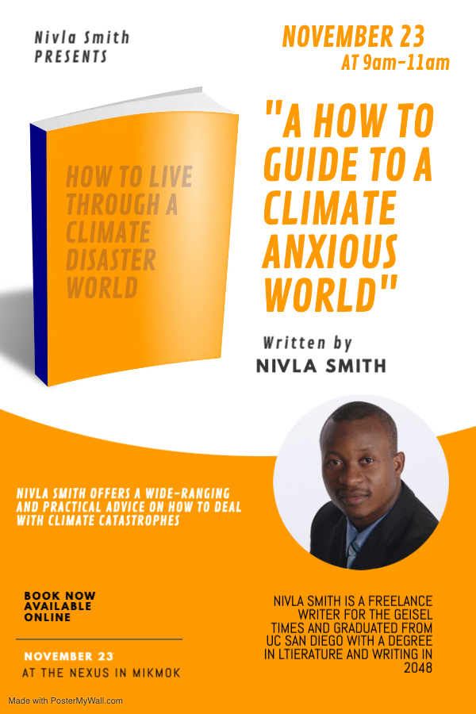
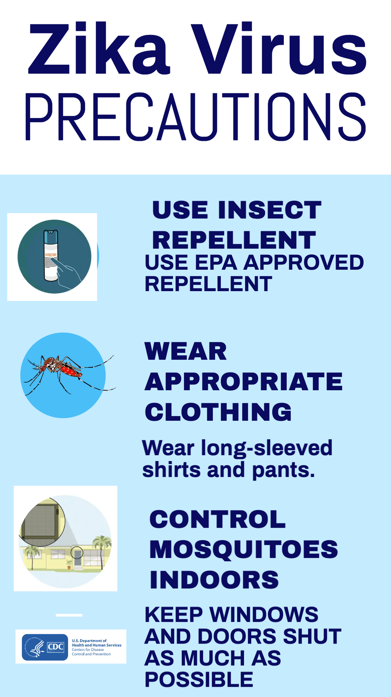

The 2052 Summer Olympics, opened with swimmer Abdullah Khan lighting the Olympic flame after a three
month delay from August after repeated intense heat waves prevented many athletes from being able to
compete.
The stadium in Riyadh was devoid of spectators as many in Saudi Arabia, tourists included, opted to
watch the event on television within AC-controlled environments...
A meeting at the Group of 20 nations summit ended early after discussions on climate repayments
turned heated. Hosted by President Mitchell in Philadelphia, the emergency G20 summit comes at a
time when China was hit with heavy rainfall that caused flooding in the Yangtze river...

Presidential candidates Mitchell and Drump clashed on Thursday over a multitude of topics, with climate
migration bringing up some of the most heated arguments. With the increasing amount of climate
refugees across the world, this debate has been widely anticipated by many.

Getting a ticket to Disneyland isn't the hardest part: it's getting there. After weeks of
frustration, one couple, Ian Bell and Elsa Agnarr, was inspired to document their almost fruitless
trip to get to Disney World in Orlando, Florida...

Around 11:32 PM on Friday, October 29th, 2052, an armed robbery took place in the local Heilongjiang
grocery store. The suspects took the _ exit on highway _ at around 11:21 PM and entered the store
located on 108 Guangdong Road in the Xiangfang district shortly after...

As the last iceberg in the Northwest Passage is expected to melt this week, all eyes are on the Bering Strait, the opening that is surrounded by Alaska to its right and Russia to its left. It is yet another profound effect of climate change that will come to redefine America and Russia’s relationship...
Cameron Ali's masterfully created film takes a look at the history of Al Gore's legacy as an ardent environmentalist. The 45th Vice-President under President Bill Clinton, Al Gore passed away two years ago at the age of 102 due to natural causes. It examines his years in politics such as his term as Vice-President and his historic presidential run in 2000...
Upcoming Opinions
If we can predict when deadly heat waves come, why can't we prevent more heat waves related deaths?
Why the Sunrise Movement needs to move internationally
How my grandmother knew more about the dangers of climate change than these politicians

